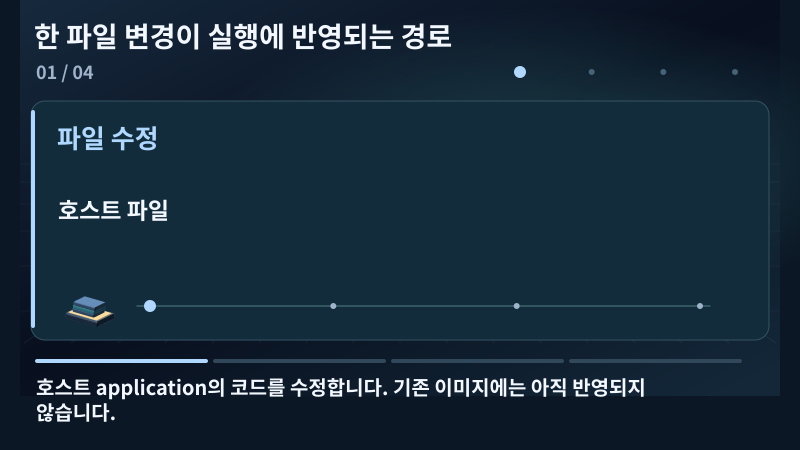
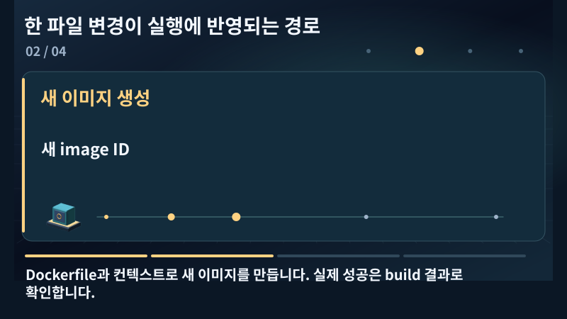
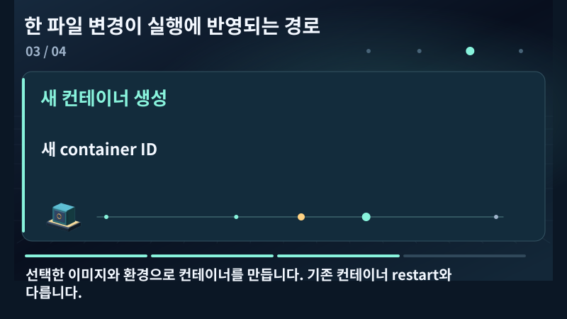
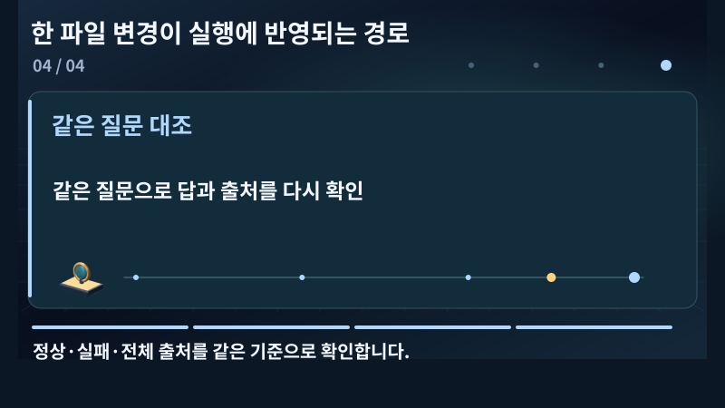

같은 API를 Docker 이미지로 옮기기
같은 API 이미지를 두 번 실행했다고 해서 먼저 띄운 컨테이너가 다시 시작된 것은 아닙니다. 이미지가 어떤 프로세스를 실행하게 되어 있는지 Dockerfile에서 읽고, 준비된 수업 환경에서는 한 컨테이너의 ID를 유지하며 상태를 관찰합니다.
수업 노트북
실행을 확인한 커널은 Python 3.12.15입니다.
이미지가 실행할 첫 프로세스 읽기
‘Dockerfile’에서 출발해 ‘이미지’를 거친 뒤 ‘기본 실행 명령’가 되는 순서를 따라가세요.
Dockerfile이 이미지의 기본 실행 명령을 정합니다.
Dockerfile의 RUN은 이미지를 만들 때 필요한 명령입니다. CMD는 그 이미지에서 컨테이너를 시작할 때 실행할 기본 명령입니다. EXPOSE는 컨테이너가 사용하는 포트를 설명합니다. 호스트에서 접속할 포트의 공개 설정은 별개입니다.
셀 01 · 원본 Dockerfile에서 CMD 읽기
71장 입문 이미지의 Dockerfile에서 마지막 CMD 줄을 가져왔습니다. JSON 배열을 읽어 프로그램과 포트를 나눠 보세요.
import json
directive = 'CMD ["python", "-m", "uvicorn", "main:app", "--host", "0.0.0.0", "--port", "8000"]'
argv = json.loads(directive.removeprefix("CMD "))
print(argv[:4], argv[-1])실행 결과
['python', '-m', 'uvicorn', 'main:app'] 8000
python -m uvicorn main:app가 8000번 포트에서 실행됩니다. Dockerfile을 읽은 단계에서는 프로세스나 컨테이너가 아직 만들어지지 않았습니다.
과제 02 · 빌드할 때만 필요한 줄 찾기
아래 줄 중 의존성을 이미지에 설치하는 지시문 한 줄을 찾으세요.
steps = ['COPY requirements.txt ./', 'RUN python -m pip install -r requirements.txt', 'EXPOSE 8000']
# RUN으로 시작하는 줄을 찾으세요.풀이와 실행 결과 보기
steps = ['COPY requirements.txt ./', 'RUN python -m pip install -r requirements.txt', 'EXPOSE 8000']
print(next(step for step in steps if step.startswith('RUN ')))실행 결과
RUN python -m pip install -r requirements.txt
이미지를 빌드할 때 설치하므로 같은 이미지의 컨테이너를 다시 시작할 때마다 의존성을 설치하지 않습니다.
같은 컨테이너를 중지하고 다시 시작하기
‘이미지’를 ‘컨테이너 생성’에 남기는 시점과 ‘실행 상태’를 확인하는 시점을 구분하세요.
이미지로 컨테이너를 만들고 실행 상태를 확인합니다.
강사가 Docker 엔진과 수업용 이미지를 미리 준비한 경우에만 아래 선택 셀의 image_id에 제공받은 로컬 이미지 ID를 넣으세요. 새 컨테이너 하나를 포트 공개 없이 만들고 네트워크를 끈 상태에서 확인한 뒤 그 컨테이너만 정리합니다. 기본값은 Docker를 호출하지 않습니다.
셀 03 · 선택 실습 · Docker 엔진에서 상태 읽기
강사가 제공한 이미지 안에서 Python 대기 프로세스를 실행할 수 있어야 합니다. create는 객체만 만들고, start와 stop은 같은 ID를 대상으로 합니다.
여기서는 API 대신 대기 프로세스를 띄워 컨테이너가 실행 상태를 유지하는지 봅니다. 컨테이너가 실행 중이어도 요청에 답하는지는 아직 모릅니다. API를 올렸을 때는 질문을 보내 상태 코드와 응답을 따로 확인하세요.
import subprocess
image_id = "" # 준비된 수업용 Python 이미지의 로컬 ID
def docker(*args):
return subprocess.run(["docker", *args], check=True, capture_output=True, text=True, timeout=40).stdout.strip()
if image_id:
docker("image", "inspect", image_id)
cid = docker("create", "--pull", "never", "--network", "none", image_id,
"python", "-c", "import time; time.sleep(120)")
try:
docker("start", cid)
print(docker("inspect", "--format", "{{.State.Status}}", cid))
docker("stop", "--time", "1", cid)
print(docker("inspect", "--format", "{{.State.Status}}", cid))
docker("start", cid)
print(docker("inspect", "--format", "{{.State.Status}}", cid))
finally:
docker("rm", "-f", cid)
else:
print("수업용 로컬 이미지 ID가 없어 컨테이너 실습을 건너뜁니다.")실행 결과
수업용 로컬 이미지 ID가 없어 컨테이너 실습을 건너뜁니다.
기본값이면 이미지가 준비되지 않았다는 안내만 나옵니다. 엔진에서 실행했을 때 확인할 상태는 running, exited, running입니다. 매번 같은 cid를 inspect하므로 ‘새 컨테이너를 하나 더 만들었다’는 설명과 구분할 수 있습니다. 수업에서는 강사가 로컬에 준비한 Python 이미지 ID를 image_id에 넣습니다. 차례로 running, exited, running이 나와야 같은 컨테이너의 정지와 재시작을 관찰한 것입니다.
다시 풀어 보기
새 이미지로 교체해야 할 상황과 기존 컨테이너를 다시 시작해도 되는 상황을 한 가지씩 골라 보세요. 이번 셀에서 본 ID는 다음 장의 DB 볼륨 이름과도 다릅니다.
관련 개념 더 읽기
무엇을 그대로 옮겨야 할까요?
오늘 바꾸는 것은 서비스의 업무 규칙이 아니라 실행 환경을 전달하는 방법입니다. 70일에는 호스트 Python에서 소유 문서와 대화를 확인하고 답변·전체 출처·저장 결과를 다뤘습니다. 이 장에서는 그 파일을 이미지에 넣습니다. 컨테이너에서 실행한다고 답변의 근거나 사용자 경계가 자동으로 좋아지지는 않습니다.
첫 15분에 7일의 reproduction.md에서 Python 버전·작업 폴더·명령을 찾고, 70일의 document-db-tests.json에서 정상·빈 근거·저장 실패 사례를 찾으세요. 자신의 기록이 없으면 제공 application/API_CONTRACT.md와 provided/local-observations.json을 읽습니다. 제공 결과는 학습자의 실행 기록이 아닙니다.
이미지와 컨테이너는 무엇이 다를까요?
이미지는 프로그램 파일과 실행에 필요한 환경을 담은 읽기 전용 기반입니다. 컨테이너는 그 이미지를 바탕으로 만들어진 실행 단위이며, 프로세스·상태·쓰기 가능한 파일 영역을 가집니다. 같은 이미지로 두 컨테이너를 만들 수 있고 둘은 서로 다른 ID와 실행 상태를 가집니다.
이미지 태그는 사람이 붙이는 이름입니다. course70:day71이라는 같은 이름이 나중에 다른 이미지에 붙을 수 있으므로 재현 기록에는 실제 image ID도 남깁니다. 레지스트리에서 전달할 때 쓰는 repository digest와 로컬 image ID를 같은 칸에 뭉뚱그리지 않습니다. 이 교재에는 아직 측정된 값이 없습니다.
| 대상 | 뜻 | 학생 기록 |
|---|---|---|
| Dockerfile | 이미지를 만드는 명령 파일 | 파일 경로·내용 해시 |
| 이미지 | 코드·의존성·기본 명령의 기반 | 태그와 별도로 image ID·플랫폼 |
| 컨테이너 | 그 기반으로 만든 프로세스 실행 단위 | container ID·이름·상태 |
| 로그 | 프로세스 표준 출력/오류 기록 | 명령·관측 시각·관련 오류 |
한 파일 변경이 실행에 반영되는 경로
작성한 소스와 이미 생성된 컨테이너 사이에 무엇이 있는지 확인합니다.
| 조작 | 코드가 복사된 이미지로 실행한 경우 |
|---|---|
| 같은 컨테이너 restart | 기존 이미지의 코드로 재시작 |
| 파일 변경 → build → 새 컨테이너 생성 | 새 이미지의 코드로 시작 |
파일 수정 뒤 기존 컨테이너를 재시작한 경우와 새 이미지로 만든 경우를 비교하세요.
이미지에 복사한 코드 변경을 반영하려면 다시 빌드한 이미지로 컨테이너를 만들어야 합니다.
- 011
- 022
- 033
- 044

STEP 01 · 작성자파일 수정
호스트 application의 코드를 수정합니다. 기존 이미지에는 아직 반영되지 않습니다.
호스트 파일

STEP 02 · 빌드새 이미지 생성
Dockerfile과 컨텍스트로 새 이미지를 만듭니다. 실제 성공은 build 결과로 확인합니다.
새 image ID

STEP 03 · 실행새 컨테이너 생성
선택한 이미지와 환경으로 컨테이너를 만듭니다. 기존 컨테이너 restart와 다릅니다.
새 container ID

STEP 04 · 검증같은 질문 대조
정상·실패·전체 출처를 같은 기준으로 확인합니다.
같은 질문으로 답과 출처를 다시 확인
build, run, start를 시간 순서로 읽기
build는 Dockerfile을 읽어 이미지를 만드는 작업입니다. run은 이미지에서 새 컨테이너를 생성하고 시작합니다. stop은 해당 프로세스를 멈추며 start는 이미 존재하는 중지 컨테이너를 다시 시작합니다. restart도 기존 컨테이너를 다시 실행하는 동작이므로 새 소스나 바뀐 환경 설정을 자동으로 받아들이지 않습니다.
처음 실행할 때 컨테이너 이름을 정하고 이후 명령에 같은 이름을 사용하면 대상을 추적하기 쉽습니다. 이름 충돌이 나면 먼저 ps -a로 기존 대상의 상태를 확인합니다. 다른 실습의 컨테이너를 정리하거나 전체 자원을 한꺼번에 삭제해 해결하지 않습니다.
| 명령 | 기대하는 변화 | 관찰할 점 |
|---|---|---|
| build | 이미지 생성/갱신 | 성공 로그·실제 image ID |
| run | 새 컨테이너 ID | 이미지·포트·상태 |
| stop → start | 같은 컨테이너의 상태 변경 | ID가 같은지 직접 비교 |
| 소스 수정 → restart | 기존 이미지의 코드로 다시 실행 | 수정이 반영됐다고 추정하지 않음 |
포트와 로그로 실행 위치 찾기
앱이 컨테이너 안의 8000번 포트에서 듣는 것과 호스트 브라우저가 연결할 주소는 별개입니다. -p 127.0.0.1:8000:8000은 호스트의 로컬 8000을 컨테이너의 8000으로 연결하는 준비 명령입니다. EXPOSE 8000만 적는 것은 호스트 포트 공개를 실행한 일이 아닙니다.
컨테이너 안에서 Uvicorn이 127.0.0.1에만 바인딩되면 컨테이너 외부에서 연결되지 않을 수 있습니다. 제공 CMD는 내부 0.0.0.0:8000을 사용하며 호스트 공개 범위는 run의 127.0.0.1로 제한합니다. 이 수업의 공개 토큰은 실제 인증이 아니므로 인터넷 공개 서비스로 확장하지 않습니다.
| 증상 | 먼저 확인 | 해석 범위 |
|---|---|---|
| 호스트 8000 사용 중 | 호스트 포트/다른 실습 상태 | 컨테이너 8000까지 바꿀 필요는 없음 |
| 컨테이너가 즉시 종료 | logs의 import/CMD 오류 | 이미지 빌드 성공과 구분 |
| /health 응답만 있음 | 응답 본문과 실제 질문 경로 | H1 postgres_health는 not_checked |
| 504 응답 | 실패 사례 입력과 H1 오류 | 정상 빈 근거와 구분 |
Dockerfile은 어느 시점의 명령일까요?
FROM은 출발 이미지를 정하고 WORKDIR는 다음 파일 작업과 실행의 기준 폴더를 정합니다. RUN은 빌드할 때 명령을 수행합니다. CMD는 이미지에서 컨테이너를 시작할 때 쓸 기본 명령입니다. 따라서 pip 설치와 웹 서버 시작은 서로 다른 시점에 일어납니다.
requirements를 먼저 복사한 뒤 의존성을 설치하고, application 전체를 나중에 복사합니다. 코드만 바뀐 경우 의존성 단계의 캐시를 재사용할 여지가 생깁니다. 그러나 캐시는 검증된 버전 잠금을 대신하지 않습니다. python:3.12-slim과 일부 HTTP 의존성 범위는 가변이므로 실제 빌드 환경과 설치 버전 기록이 필요합니다.
COPY application/ ./는 70일의 고정 배포 목록 전체를 /app으로 옮깁니다. app.py만 복사하면 s1 런타임·자료·SQL·설정 모듈이 빠집니다. CMD의 app:create_app은 모듈 app의 팩터리 함수이며 --factory로 새 ASGI 앱을 만들도록 지시합니다. intro의 main:app과 서로 바꿔 쓰지 않습니다.
컨텍스트에는 어떤 파일을 넣을까요?
빌드 컨텍스트는 Docker가 COPY 입력으로 읽을 수 있는 파일 범위입니다. examples에서 docker build ./integration을 실행하면 integration 폴더가 컨텍스트가 됩니다. Dockerfile의 상대 경로를 현재 셸 폴더 기준으로만 읽지 말고 컨텍스트 기준으로 대응시키세요.
integration에는 Dockerfile, .dockerignore, application이 있습니다. 실제 .env, 가상환경, 강사 답안, 백업은 이미지에 필요하지 않습니다. .dockerignore는 그런 파일이 컨텍스트에 포함되지 않도록 돕습니다. 이 목록을 적었다는 사실만으로 모든 비밀이 제거됐다고 단정하지 말고 COPY 대상과 파일 목록도 확인합니다.
INPUT_MANIFEST.json은 70 원본과 현재 사본의 해시를 연결합니다. 해시 일치는 같은 바이트라는 뜻이며 파일이 올바른 기능을 수행한다는 뜻은 아닙니다. 로컬 테스트, 실제 HTTP, 실제 DB, 실제 컨테이너 실행은 별도 근거가 필요합니다.
환경변수와 실행 사용자는 무엇을 바꿀까요?
ENV에 설정한 PYTHONUNBUFFERED는 Python 출력 방식을 정합니다. PGPASSWORD와 같은 실행 시 비밀값은 Dockerfile에 기록하지 않고 컨테이너를 생성할 때 전달합니다. .env.example은 변수 이름을 안내하는 빈 양식이며, 파일이 있다는 이유만으로 앱 프로세스에 값이 들어가는 것은 아닙니다.
H1의 config.py는 PGHOST, PGPORT, PGDATABASE, PGUSER, PGPASSWORD를 읽습니다. 호스트에서 DB에 접근할 때 기본 주소는 127.0.0.1:55432입니다. 같은 Compose 네트워크의 API 컨테이너에서는 db:5432를 사용합니다. 컨테이너의 127.0.0.1은 그 컨테이너 자신을 가리킵니다.
Dockerfile은 learner 사용자를 만들어 앱 프로세스를 실행합니다. 일반 사용자 실행은 파일 권한을 다루는 기본 조치이며 실제 사용자 인증을 구현하는 것과 다릅니다. 공개 course-alice 토큰은 수업용 신원 대역이고 운영 보안을 보장하지 않습니다.
| 변수/설정 | 누가 읽나 | 기록할 것 |
|---|---|---|
| PYTHONUNBUFFERED | Python 실행 | 설정값 1의 목적 |
| PGHOST/PGPORT | H1 DB 클라이언트 | 실행 위치와 주소 |
| PGPASSWORD | DB 클라이언트 | 변수 이름·주입 위치만 |
| USER learner | 컨테이너 런타임 | 실행 사용자·권한 오류 |
| .env.example | 학생이 읽는 양식 | 값을 넣기 전 빈 상태 |
작은 앱으로 실행 순서를 연습하기
intro는 question 하나를 받아 고정 안내를 반환하는 작은 대역입니다. DB·문서 소유·전체 A1을 사용하지 않으므로 Docker의 파일 위치와 프로세스 상태에 집중할 수 있습니다. service.py의 장애 재현 분기는 실제 상류 장애가 아니라 TimeoutError를 의도적으로 발생시키는 학습 입력입니다.
준비된 환경이라면 3절 명령으로 intro를 실행한 다음 정상 질문과 장애 질문을 비교합니다. 실행이 막히면 같은 두 요청을 읽고 FastAPI의 정상 응답과 예외 변환 경로를 따라가세요. 정적 추론에는 예상이라고 표시하고 HTTP 상태를 실제 관찰 칸에 넣지 않습니다.
| 입력 | intro에서 기대하는 의미 | 이것으로 확인하지 못한 것 |
|---|---|---|
| 실습 안내 | answer와 source 문자열 | 실제 LLM 생성/검색 |
| 장애 재현 | 504로 변환하는 예외 경로 | 실제 네트워크 시간 초과 |
| 공백 질문 | 입력 검증 실패 | H1의 모든 요청·소유권 경계 |
고정 70 앱을 이미지 입력으로 연결하기
integration/application은 독립 준비 검수를 통과한 70일 배포 파일 197개와 manifest 한 개를 그대로 받은 사본입니다. 기존 prototype은 설계 당시 기록으로 보존하며 학생 실행 경로는 examples입니다. 앱을 통합했다는 말은 현재 파일 연결과 로컬 회귀 범위에 해당하고, 컨테이너 실행 성공을 뜻하지 않습니다.
이미지에서도 같은 H1을 확인해야 합니다
H1의 기본 질문 경로에는 소유 대화와 ready 문서가 필요합니다. 70일에 실제로 생성한 대화·문서 ID와 같은 질문을 사용해 답변뿐 아니라 result.status, sources 전체, generation_calls, persistence를 비교하세요. 여기서 sources는 id/text/source/page 객체 배열입니다. 글자만 같고 출처가 사라졌다면 같은 기능을 보존한 결과가 아닙니다.
로컬 제공 사례는 SQL 호출 대역 위에서 실제 S1을 호출한 기록입니다. normal은 완료된 답과 출처를, empty는 정상 빈 근거를, write_failure는 생성된 A1과 저장 실패를 분리합니다. status_code 숫자가 있다고 실제 HTTP를 보냈다는 뜻은 아닙니다. 컨테이너 결과 칸은 직접 실행하기 전까지 비워 둡니다.
기존 DB·단계 적용·실제 네트워크를 확인한 수업 환경에서만 아래 H1 실행 절차를 사용합니다. COURSE_B1_NETWORK에는 확인한 기존 B1 네트워크 이름을, COURSE70_IMAGE에는 기록한 로컬 image ID를 둡니다. 이름을 임의로 추측해서 다른 DB에 연결하지 않습니다. DB 준비가 남았다면 72일의 같은 B1 적용 절차로 이어갑니다.
| 사례 | 지켜야 할 경계 | 실제 실행 전 상태 |
|---|---|---|
| 정상 답변 | A1 전체·출처 객체·생성 수 보존 | HOLD |
| 빈 근거 | no_evidence와 생성 0 | HOLD |
| 출처 오류 | 안전한 오류 또는 invalid_citation의 계약 차이 | 로컬 단위 검사와 실제 HTTP를 구분 |
| 다른 소유자 | 없음과 타인을 구별하지 않는 접근 오류 | HOLD |
| 저장 실패 | 완료 A1 보존 + persistence 실패/효과 미확정 | 실제 DB 실패 주입은 미실행 |
실패를 포함한 실행 문서를 완성하기
container/runbook.md에는 동료가 같은 경로에서 무엇을 실행해야 하는지 적습니다. 시작 위치, 입력 manifest, 명령, 환경변수 이름, 실제 결과, 실패 원인, 남은 HOLD 순서로 쓰면 준비와 관측이 섞이지 않습니다. 성공 문장만 모으지 말고 한 번 막힌 위치와 다음 확인을 남기세요.
코드가 바뀌었다면 새 이미지를 빌드하고 새 컨테이너를 생성해야 합니다. 기존 컨테이너를 중지하고 지정한 대상만 제거하는 명령은 실행 대상과 필요한 기록을 확인한 뒤 사용합니다. DB 볼륨을 지우는 작업은 이 장의 정리 절차에 없습니다.
다음 날 무엇을 넘길까요?
72일은 이 이미지의 API와 기존 course-b1 DB를 함께 구성합니다. 앱 manifest SHA, 실제 image ID 또는 registry digest, 플랫폼, 환경변수 이름, 동일 질문·출처 결과와 남은 HOLD를 넘기세요. 실제 이미지가 없으면 null을 유지하고 코드 패키징 준비까지만 완료했다고 적습니다.
파일 배포는 examples의 상대 폴더 구조를 유지합니다. index.html은 연결 교재이고 chapter71.html은 화면 자산을 담은 단일 HTML입니다. 실습 파일 목록은 일반 링크이므로 examples를 함께 두어야 합니다. 강사용 해설은 학생용 JSON이나 HTML에 포함하지 않았습니다.